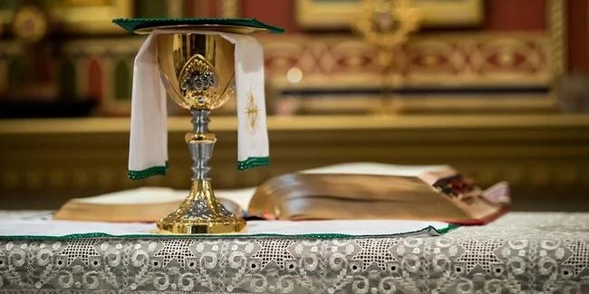

Photo Gallery
Moments from our parish life.


Bronx, New York

Stay connected with the global Catholic Church. Click below to read official news from Vatican News.
Moments from our parish life.
Nourish your spirit with today’s Gospel reading and reflection from Vatican News.
7:00 AM — Bilingual
5:30 PM — English
7:30 PM — Spanish
8:00 AM — Spanish
9:30 AM — English
11:00 AM — Spanish
Mon–Fri: 1:00 PM — English
Thursday: 7:30 PM — Spanish
Join us in prayer, fellowship, and community life.
Every Sunday after the 11:00 AM Mass
Parish Hall
Fridays • 6:00 PM
Lower Church
Wednesdays • 7:00 PM
Rectory Meeting Room
Saturday: 4:00 PM – 5:00 PM
Or by appointment
Welcome to St. Angela Merici Catholic Church. We are delighted to welcome you to our parish website. Here you will find information about our parish community, the celebration of the Sacred Liturgy and the Sacraments, parish ministries, faith formation, and opportunities to grow in your relationship with Jesus Christ. Whether you are a long-time parishioner, new to our community, or simply visiting, we warmly invite you to join us in prayer, worship, and fellowship.
Founded in 1899, St. Angela Merici Catholic Church has faithfully served the people of the Bronx for more than a century. Through changing times, our parish has remained a place of prayer, worship, and service, welcoming generations of families to encounter Christ through the Eucharist, the Sacraments, and the life of the Church.
St. Angela Merici (1474–1540) was an Italian educator, mystic, and the foundress of the Company of St. Ursula, dedicated to the Christian education and formation of young women. Guided by deep faith, wisdom, and charity, she believed that education rooted in the Gospel could transform both individuals and society. Her example continues to inspire our parish.
St. Angela Merici Catholic Church
917 Morris Avenue, Bronx, NY
(718) 293-0984
saintangelamerici@yahoo.com